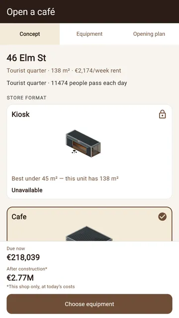
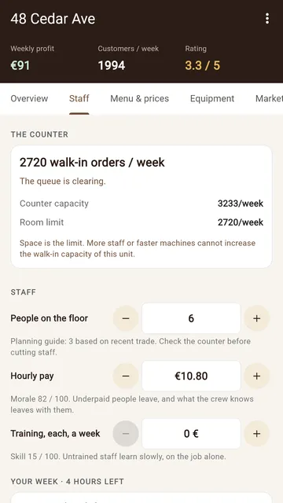
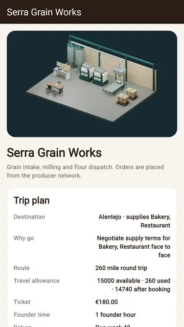

Privacy policy and support
Percolate for Android and iPhone · Last updated: 2 November 2026
In short: no account, no ads, no analytics and no servers of ours. Your games stay on your device.
Data on your device
Percolate does not need an account. Your careers, the player and company names you choose, and your settings are stored only in the app's private storage on your device. We do not receive them. They stay there until you delete a career, clear the app's data or uninstall the app. On iPhone, the free game weeks already used and the date of the App Store's last answer are also kept in the iOS Keychain on your device, which can remain after uninstalling the app: this way reinstalling does not restart the free period. We do not receive them.
No advertising, no analytics
The app contains no advertising, no behavioural analytics, no crash-reporting service and no cloud save run by us. It does not collect your location, contacts, photos or device identifiers.
Purchases through Google Play and the App Store
Percolate is free to download and free to play for its first five game years, and the app contains no advertising. Optional one-time purchases (no subscription) are processed by Google Play on Android and by the App Store on iPhone: the full-game unlock (play beyond year five, unlimited producer trips and the Founder's Archive), the livery studio (sold separately, cosmetic only) and the career slots pack (sold separately, four extra career slots). Five optional expansions, each its own one-time purchase that needs the full game: real estate, bank, hairdresser, night club and prison. Those eight products are all there is, plus one bundle (the all-expansions pack) that unlocks the five expansions together. Any further purchase will be added to this page before it is offered. Prices are set in each store and shown to you there in your currency. We never receive your payment-card details.
Every purchase is checked on your device, and nothing is sent to us for that. On Android, the app verifies Google's digital signature on the purchase record with Google Play's public licence key built into the app, asks Google Play which Percolate purchases your Google account owns, and keeps the verified answer in the app's private storage. On iPhone, the app asks StoreKit, Apple's purchase system, which purchases passed Apple's check on that device, and keeps no purchase record of its own. So the game also works offline: a purchase stays valid for up to 30 days after the last time the store confirmed it. Google handles store and payment data under its privacy policy, and Apple under its own.
Updates
On Android, the app can ask Google Play whether a newer version is available and offer to install it; this check is handled by Google Play. On iPhone, updates come through the App Store.
Exporting and importing careers
If you export a career, the app creates a file and opens your device's share menu, and you choose where it goes. If you import a file, the app reads only the file you pick. Neither sends anything to us.
Device backup
On Android, saved games are included in Android backup and device-transfer rules: when this is on and supported by your device, Android may copy them through your Google account backup. On iPhone, they may be included in your iCloud or computer backup, according to your device settings. We do not receive and cannot access these backups; your device settings control them.
Links
Links in the app (this page, the store page, the developer profile) open in your browser or in the store, where that site's own privacy policy applies.
Children
Percolate is not directed at children under 13. The app collects no personal data from any player.
Support and data requests
Write to percolategame@gmail.com. If you contact us, we receive your email address, your message and any attachments you choose to send, and use them only to answer you. Please do not send passwords or payment details. We keep this correspondence while we handle your request, and afterwards only as long as reasonably needed for follow-up, abuse prevention or legal obligations. You can ask us to delete it at any time.
Security
Game data uses the app's private storage on your device, which other apps cannot read. Support emails pass through the email providers involved. No method of storage or transmission is completely secure.
Deleting your data
Delete a career from the saves screen. Remove all local data by clearing the app's storage in your device's app settings, or by uninstalling the app. Backups are managed in your device's backup settings. To delete support emails, write to us. On iPhone, only the free-week count and the date of the last store check stay in the Keychain on the device after uninstalling; erasing the device removes them.
Changes
We will update this page before any change in the app alters how data is handled. The date at the top shows the current version.
Informativa privacy e assistenza
Percolate per Android e iPhone · Ultimo aggiornamento: 2 novembre 2026
In breve: nessun account, nessuna pubblicità, nessuna analisi e nessun nostro server. Le tue partite restano sul tuo dispositivo.
Dati sul dispositivo
Percolate non richiede un account. Le carriere, i nomi del giocatore e dell'azienda che scegli e le impostazioni sono salvati solo nella memoria privata dell'app sul tuo dispositivo. Noi non li riceviamo. Restano lì finché non elimini una carriera, cancelli i dati dell'app o la disinstalli. Su iPhone, le settimane di gioco gratuite già usate e la data dell'ultima risposta dell'App Store sono conservate anche nel Portachiavi iOS del dispositivo, che può restare dopo la disinstallazione: così reinstallare non fa ripartire il periodo gratuito. Non li riceviamo.
Nessuna pubblicità, nessuna analisi
L'app non contiene pubblicità, analisi del comportamento, servizi di segnalazione degli arresti anomali né salvataggi cloud gestiti da noi. Non raccoglie posizione, contatti, foto o identificativi del dispositivo.
Acquisti tramite Google Play e App Store
Percolate si scarica gratis e si gioca gratis per i primi cinque anni di gioco, e l'app non contiene pubblicità. Gli acquisti facoltativi una tantum (nessun abbonamento) sono gestiti da Google Play su Android e dall'App Store su iPhone: lo sblocco del gioco completo (giocare oltre il quinto anno, viaggi illimitati dai produttori e Archivio del Fondatore), lo studio livree (venduto a parte, solo estetico) e il pacchetto salvataggi (venduto a parte, quattro slot carriera in più). Cinque espansioni facoltative, ognuna un acquisto una tantum a sé che richiede il gioco completo: immobiliare, banca, parrucchiere, locale notturno e prigione. Questi otto prodotti sono tutti quelli che esistono, più un pacchetto (tutte le espansioni) che sblocca insieme le cinque espansioni. Ogni altro acquisto sarà aggiunto a questa pagina prima di essere offerto. I prezzi sono stabiliti in ciascuno store e mostrati lì nella tua valuta. Non riceviamo mai i dati della tua carta di pagamento.
Ogni acquisto è controllato sul tuo dispositivo e per questo non ci viene inviato nulla. Su Android l'app verifica la firma digitale di Google sulla ricevuta con la chiave pubblica di licenza di Google Play inclusa nell'app, chiede a Google Play quali acquisti di Percolate possiede il tuo account Google e conserva la risposta verificata nella memoria privata dell'app. Su iPhone l'app chiede a StoreKit, il sistema di acquisti di Apple, quali acquisti hanno superato il controllo di Apple su quel dispositivo, e non conserva ricevute proprie. Così il gioco funziona anche offline: un acquisto resta valido fino a 30 giorni dall'ultima conferma dello store. Google tratta i dati dello store e dei pagamenti secondo la sua informativa sulla privacy, Apple secondo la propria.
Aggiornamenti
Su Android l'app può chiedere a Google Play se è disponibile una versione più recente e proporti di installarla; questo controllo è gestito da Google Play. Su iPhone gli aggiornamenti arrivano dall'App Store.
Esportare e importare carriere
Se esporti una carriera, l'app crea un file e apre il menu di condivisione del dispositivo, e scegli tu dove va. Se importi un file, l'app legge solo il file che scegli. In nessuno dei due casi ci viene inviato qualcosa.
Backup del dispositivo
Su Android i salvataggi rientrano nelle regole di backup e trasferimento di Android: se la funzione è attiva e supportata dal dispositivo, Android può copiarli tramite il backup del tuo account Google. Su iPhone possono rientrare nel backup iCloud o su computer, secondo le impostazioni del dispositivo. Non riceviamo questi backup e non possiamo accedervi; li controllano le impostazioni del tuo dispositivo.
Link
I link nell'app (questa pagina, la pagina dello store, il profilo dello sviluppatore) si aprono nel browser o nello store, dove vale l'informativa sulla privacy di quel sito.
Minori
Percolate non è rivolto ai minori di 13 anni. L'app non raccoglie dati personali da nessun giocatore.
Assistenza e richieste sui dati
Scrivi a percolategame@gmail.com. Se ci contatti, riceviamo il tuo indirizzo email, il messaggio e gli eventuali allegati che scegli di inviare, e li usiamo solo per risponderti. Non inviare password o dati di pagamento. Conserviamo la corrispondenza mentre gestiamo la richiesta e, in seguito, solo per il tempo ragionevolmente necessario a seguiti, prevenzione degli abusi od obblighi di legge. Puoi chiederne la cancellazione in qualsiasi momento.
Sicurezza
I dati di gioco stanno nella memoria privata dell'app sul tuo dispositivo, che le altre app non possono leggere. Le email di assistenza passano dai fornitori di posta coinvolti. Nessun metodo di conservazione o trasmissione è completamente sicuro.
Eliminare i tuoi dati
Elimina una carriera dalla schermata dei salvataggi. Rimuovi tutti i dati locali cancellando la memoria dell'app nelle impostazioni app del dispositivo, oppure disinstallandola. I backup si gestiscono nelle impostazioni di backup del dispositivo. Per cancellare le email di assistenza, scrivici. Su iPhone, dopo la disinstallazione restano nel Portachiavi del dispositivo solo il conteggio delle settimane gratuite e la data dell'ultimo controllo dello store; inizializzare il dispositivo li cancella.
Modifiche
Aggiorneremo questa pagina prima che una modifica dell'app cambi il modo in cui i dati vengono trattati. La data in alto indica la versione in vigore.
Datenschutzerklärung und Support
Percolate für Android und iPhone · Zuletzt aktualisiert: 2. November 2026
Kurz gesagt: kein Konto, keine Werbung, keine Analyse und keine eigenen Server. Deine Spielstände bleiben auf deinem Gerät.
Daten auf deinem Gerät
Percolate braucht kein Konto. Deine Karrieren, die von dir gewählten Spieler- und Firmennamen und deine Einstellungen werden ausschließlich im privaten Speicher der App auf deinem Gerät gespeichert. Wir erhalten sie nicht. Sie bleiben dort, bis du eine Karriere löschst, die App-Daten löschst oder die App deinstallierst. Auf dem iPhone werden die bereits genutzten kostenlosen Spielwochen und das Datum der letzten Antwort des App Store zusätzlich im iOS-Schlüsselbund des Geräts gespeichert, der auch nach dem Löschen der App bestehen bleiben kann: So startet eine Neuinstallation den kostenlosen Zeitraum nicht neu. Wir erhalten diese Daten nicht.
Keine Werbung, keine Analyse
Die App enthält keine Werbung, keine Verhaltensanalyse, keinen Absturzbericht-Dienst und keine von uns betriebene Cloud-Speicherung. Sie erfasst weder Standort noch Kontakte, Fotos oder Gerätekennungen.
Käufe über Google Play und den App Store
Percolate ist kostenlos herunterzuladen und in den ersten fünf Spieljahren kostenlos spielbar; die App enthält keine Werbung. Optionale Einmalkäufe (kein Abo) werden auf Android über Google Play und auf dem iPhone über den App Store abgewickelt: die Freischaltung des vollständigen Spiels (über das fünfte Jahr hinaus spielen, unbegrenzte Produzentenreisen und das Gründerarchiv), das Lackierungsstudio (separat erhältlich, nur kosmetisch) und das Karriereplätze-Paket (separat erhältlich, vier zusätzliche Karriereplätze). Fünf optionale Erweiterungen, jede ein eigener Einmalkauf, der das vollständige Spiel voraussetzt: Immobilien, Bank, Friseur, Nachtclub und Gefängnis. Das sind alle acht Produkte, dazu ein Paket (das Paket „Alle Erweiterungen“), das die fünf Erweiterungen zusammen freischaltet. Jeder weitere Kauf wird auf dieser Seite ergänzt, bevor er angeboten wird. Die Preise werden im jeweiligen Store festgelegt und dort in deiner Währung angezeigt. Wir erhalten niemals deine Zahlungskartendaten.
Jeder Kauf wird auf deinem Gerät geprüft, dafür wird nichts an uns gesendet. Auf Android prüft die App Googles digitale Signatur des Kaufbelegs mit dem in der App enthaltenen öffentlichen Lizenzschlüssel von Google Play, fragt bei Google Play ab, welche Percolate-Käufe zu deinem Google-Konto gehören, und speichert die geprüfte Antwort im privaten Speicher der App. Auf dem iPhone fragt die App bei StoreKit, dem Kaufsystem von Apple, welche Käufe Apples Prüfung auf diesem Gerät bestanden haben, und speichert keine eigenen Belege. So funktioniert das Spiel auch offline: Ein Kauf bleibt bis zu 30 Tage nach der letzten Bestätigung durch den Store gültig. Google verarbeitet Store- und Zahlungsdaten gemäß seiner Datenschutzerklärung, Apple gemäß seiner eigenen.
Updates
Auf Android kann die App bei Google Play nachfragen, ob eine neuere Version verfügbar ist, und deren Installation anbieten; diese Prüfung erfolgt über Google Play. Auf dem iPhone kommen Updates über den App Store.
Karrieren exportieren und importieren
Wenn du eine Karriere exportierst, erstellt die App eine Datei und öffnet das Teilen-Menü deines Geräts, und du entscheidest, wohin sie geht. Wenn du eine Datei importierst, liest die App nur die von dir gewählte Datei. In beiden Fällen wird nichts an uns gesendet.
Gerätesicherung
Auf Android unterliegen Spielstände den Sicherungs- und Geräteübertragungsregeln von Android: Wenn die Funktion aktiv ist und dein Gerät sie unterstützt, kann Android sie über die Sicherung deines Google-Kontos kopieren. Auf dem iPhone können sie je nach Geräteeinstellungen in deine iCloud- oder Computer-Sicherung aufgenommen werden. Wir erhalten diese Sicherungen nicht und können nicht darauf zugreifen; sie werden über deine Geräteeinstellungen gesteuert.
Links
Links in der App (diese Seite, die Store-Seite, das Entwicklerprofil) öffnen sich in deinem Browser oder im Store, wo die Datenschutzerklärung der jeweiligen Seite gilt.
Kinder
Percolate richtet sich nicht an Kinder unter 13 Jahren. Die App erhebt von keinem Spieler personenbezogene Daten.
Support und Anfragen zu Daten
Schreib an percolategame@gmail.com. Wenn du uns kontaktierst, erhalten wir deine E-Mail-Adresse, deine Nachricht und die Anhänge, die du mitschickst, und verwenden sie nur, um dir zu antworten. Bitte sende keine Passwörter oder Zahlungsdaten. Wir bewahren die Korrespondenz auf, solange wir deine Anfrage bearbeiten, und danach nur so lange, wie es für Rückfragen, Missbrauchsverhinderung oder gesetzliche Pflichten vernünftigerweise nötig ist. Du kannst jederzeit ihre Löschung verlangen.
Sicherheit
Spieldaten liegen im privaten Speicher der App auf deinem Gerät, den andere Apps nicht lesen können. Support-E-Mails laufen über die beteiligten E-Mail-Anbieter. Keine Methode der Speicherung oder Übertragung ist vollkommen sicher.
Deine Daten löschen
Lösche eine Karriere im Spielstand-Bildschirm. Entferne alle lokalen Daten, indem du den App-Speicher in den App-Einstellungen deines Geräts löschst oder die App deinstallierst. Sicherungen verwaltest du in den Sicherungseinstellungen deines Geräts. Um Support-E-Mails löschen zu lassen, schreib uns. Auf dem iPhone bleiben nach dem Löschen der App nur die Zahl der kostenlosen Wochen und das Datum der letzten Store-Prüfung im Schlüsselbund des Geräts; das Löschen des Geräts entfernt sie.
Änderungen
Wir aktualisieren diese Seite, bevor eine Änderung der App den Umgang mit Daten verändert. Das Datum oben zeigt die aktuelle Fassung.
Política de privacidad y soporte
Percolate para Android y iPhone · Última actualización: 2 de noviembre de 2026
En resumen: sin cuenta, sin anuncios, sin analítica y sin servidores propios. Tus partidas se quedan en tu dispositivo.
Datos en tu dispositivo
Percolate no necesita una cuenta. Tus carreras, los nombres de jugador y de empresa que eliges y tus ajustes se guardan solo en el almacenamiento privado de la app en tu dispositivo. Nosotros no los recibimos. Permanecen allí hasta que borres una carrera, borres los datos de la app o la desinstales. En iPhone, las semanas de juego gratuitas ya usadas y la fecha de la última respuesta de App Store también se guardan en el llavero de iOS del dispositivo, que puede permanecer tras desinstalar la app: así, reinstalar no reinicia el periodo gratuito. No recibimos estos datos.
Sin anuncios, sin analítica
La app no contiene anuncios, analítica de comportamiento, servicios de informes de fallos ni guardado en la nube gestionado por nosotros. No recoge tu ubicación, contactos, fotos ni identificadores del dispositivo.
Compras a través de Google Play y App Store
Percolate se descarga gratis y se juega gratis durante sus primeros cinco años de juego; la app no contiene anuncios. Las compras opcionales, únicas y sin suscripción, las gestionan Google Play en Android y App Store en iPhone: el desbloqueo del juego completo (jugar más allá del quinto año, viajes ilimitados a productores y el Archivo del Fundador), el estudio de librea (se vende aparte, solo estético) y el paquete de ranuras de carrera (se vende aparte, cuatro ranuras de carrera extra). Cinco expansiones opcionales, cada una una compra única aparte que requiere el juego completo: inmobiliaria, banco, peluquería, discoteca y prisión. Esos son los ocho productos que existen, más un paquete (el paquete de todas las expansiones) que desbloquea las cinco expansiones juntas. Cualquier otra compra se añadirá a esta página antes de ofrecerse. Los precios se fijan en cada tienda y se muestran allí en tu moneda. Nunca recibimos los datos de tu tarjeta de pago.
Cada compra se comprueba en tu dispositivo y para ello no se nos envía nada. En Android, la app verifica la firma digital de Google en el recibo con la clave pública de licencia de Google Play incluida en la app, pregunta a Google Play qué compras de Percolate tiene tu cuenta de Google y guarda la respuesta verificada en el almacenamiento privado de la app. En iPhone, la app pregunta a StoreKit, el sistema de compras de Apple, qué compras han superado la comprobación de Apple en ese dispositivo, y no guarda recibos propios. Así el juego funciona también sin conexión: una compra sigue siendo válida hasta 30 días después de la última confirmación de la tienda. Google trata los datos de la tienda y de pago según su política de privacidad, y Apple según la suya.
Actualizaciones
En Android, la app puede preguntar a Google Play si hay una versión más reciente y ofrecerte instalarla; esta comprobación la realiza Google Play. En iPhone, las actualizaciones llegan a través de App Store.
Exportar e importar carreras
Si exportas una carrera, la app crea un archivo y abre el menú de compartir de tu dispositivo, y tú eliges adónde va. Si importas un archivo, la app lee solo el archivo que eliges. En ninguno de los dos casos se nos envía nada.
Copia de seguridad del dispositivo
En Android, las partidas guardadas entran en las reglas de copia de seguridad y transferencia de Android: si la función está activa y tu dispositivo la admite, Android puede copiarlas mediante la copia de seguridad de tu cuenta de Google. En iPhone, pueden incluirse en tu copia de iCloud o del ordenador según los ajustes del dispositivo. No recibimos estas copias ni podemos acceder a ellas; las controlan los ajustes de tu dispositivo.
Enlaces
Los enlaces de la app (esta página, la página de la tienda, el perfil del desarrollador) se abren en tu navegador o en la tienda, donde se aplica la política de privacidad de ese sitio.
Menores
Percolate no está dirigido a menores de 13 años. La app no recoge datos personales de ningún jugador.
Soporte y solicitudes sobre datos
Escribe a percolategame@gmail.com. Si nos contactas, recibimos tu dirección de correo, tu mensaje y los archivos adjuntos que decidas enviar, y los usamos solo para responderte. No envíes contraseñas ni datos de pago. Conservamos esta correspondencia mientras atendemos tu solicitud y, después, solo el tiempo razonablemente necesario para el seguimiento, la prevención de abusos o las obligaciones legales. Puedes pedir que la borremos en cualquier momento.
Seguridad
Los datos del juego usan el almacenamiento privado de la app en tu dispositivo, que otras apps no pueden leer. Los correos de soporte pasan por los proveedores de correo implicados. Ningún método de almacenamiento o transmisión es completamente seguro.
Borrar tus datos
Borra una carrera desde la pantalla de partidas guardadas. Elimina todos los datos locales borrando el almacenamiento de la app en los ajustes de aplicaciones de tu dispositivo, o desinstalando la app. Las copias de seguridad se gestionan en los ajustes de copia de seguridad del dispositivo. Para borrar los correos de soporte, escríbenos. En iPhone, tras desinstalar solo quedan en el llavero del dispositivo el recuento de semanas gratuitas y la fecha de la última comprobación de la tienda; borrar el dispositivo los elimina.
Cambios
Actualizaremos esta página antes de que un cambio en la app modifique el tratamiento de los datos. La fecha de arriba indica la versión vigente.
Politique de confidentialité et assistance
Percolate pour Android et iPhone · Dernière mise à jour : 2 novembre 2026
En bref : pas de compte, pas de publicité, pas d'analyse et aucun serveur à nous. Tes parties restent sur ton appareil.
Données sur ton appareil
Percolate ne nécessite aucun compte. Tes carrières, les noms de joueur et d'entreprise que tu choisis et tes réglages sont enregistrés uniquement dans le stockage privé de l'application sur ton appareil. Nous ne les recevons pas. Ils y restent jusqu'à ce que tu supprimes une carrière, effaces les données de l'application ou la désinstalles. Sur iPhone, les semaines de jeu gratuites déjà utilisées et la date de la dernière réponse de l'App Store sont aussi conservées dans le trousseau iOS de l'appareil, qui peut subsister après la désinstallation : ainsi, réinstaller ne relance pas la période gratuite. Nous ne recevons pas ces données.
Pas de publicité, pas d'analyse
L'application ne contient ni publicité, ni analyse du comportement, ni service de rapports de plantage, ni sauvegarde dans le cloud gérée par nous. Elle ne collecte ni ta position, ni tes contacts, ni tes photos, ni les identifiants de l'appareil.
Achats via Google Play et l'App Store
Percolate se télécharge gratuitement et se joue gratuitement pendant ses cinq premières années de jeu ; l'application ne contient aucune publicité. Les achats facultatifs, uniques et sans abonnement, sont traités par Google Play sur Android et par l'App Store sur iPhone : le déblocage du jeu complet (jouer au-delà de la cinquième année, voyages illimités chez les producteurs et Archives du Fondateur), l'atelier de livrée (vendu séparément, purement esthétique) et le pack d'emplacements de carrière (vendu séparément, quatre emplacements de carrière en plus). Cinq extensions facultatives, chacune un achat unique distinct qui nécessite le jeu complet : immobilier, banque, salon de coiffure, boîte de nuit et prison. Ce sont les huit produits qui existent, plus un pack (toutes les extensions) qui débloque les cinq extensions ensemble. Tout autre achat sera ajouté à cette page avant d'être proposé. Les prix sont fixés dans chaque store et t'y sont indiqués dans ta devise. Nous ne recevons jamais les données de ta carte de paiement.
Chaque achat est vérifié sur ton appareil et rien ne nous est envoyé pour cela. Sur Android, l'application vérifie la signature numérique de Google sur le reçu avec la clé publique de licence de Google Play intégrée à l'application, demande à Google Play quels achats Percolate appartiennent à ton compte Google et garde la réponse vérifiée dans le stockage privé de l'application. Sur iPhone, l'application demande à StoreKit, le système d'achat d'Apple, quels achats ont passé le contrôle d'Apple sur cet appareil, et ne garde aucun reçu. Le jeu fonctionne ainsi aussi hors ligne : un achat reste valable jusqu'à 30 jours après la dernière confirmation du store. Google traite les données du store et de paiement selon sa politique de confidentialité, et Apple selon la sienne.
Mises à jour
Sur Android, l'application peut demander à Google Play si une version plus récente est disponible et te proposer de l'installer ; cette vérification est effectuée par Google Play. Sur iPhone, les mises à jour passent par l'App Store.
Exporter et importer des carrières
Si tu exportes une carrière, l'application crée un fichier et ouvre le menu de partage de ton appareil ; c'est toi qui choisis sa destination. Si tu importes un fichier, l'application lit uniquement le fichier que tu sélectionnes. Rien ne nous est envoyé dans aucun des deux cas.
Sauvegarde de l'appareil
Sur Android, les parties enregistrées relèvent des règles de sauvegarde et de transfert d'appareil d'Android : si la fonction est activée et prise en charge par ton appareil, Android peut les copier via la sauvegarde de ton compte Google. Sur iPhone, elles peuvent être incluses dans ta sauvegarde iCloud ou sur ordinateur selon les réglages de l'appareil. Nous ne recevons pas ces sauvegardes et ne pouvons pas y accéder ; elles dépendent des réglages de ton appareil.
Liens
Les liens dans l'application (cette page, la page du store, le profil du développeur) s'ouvrent dans ton navigateur ou dans le store, où s'applique la politique de confidentialité de ce site.
Enfants
Percolate ne s'adresse pas aux enfants de moins de 13 ans. L'application ne collecte aucune donnée personnelle auprès d'aucun joueur.
Assistance et demandes relatives aux données
Écris à percolategame@gmail.com. Si tu nous contactes, nous recevons ton adresse e-mail, ton message et les pièces jointes que tu choisis d'envoyer, et nous les utilisons uniquement pour te répondre. N'envoie ni mot de passe ni données de paiement. Nous conservons cette correspondance pendant le traitement de ta demande, puis seulement le temps raisonnablement nécessaire au suivi, à la prévention des abus ou aux obligations légales. Tu peux en demander la suppression à tout moment.
Sécurité
Les données du jeu utilisent le stockage privé de l'application sur ton appareil, que les autres applications ne peuvent pas lire. Les e-mails d'assistance transitent par les fournisseurs de messagerie concernés. Aucune méthode de stockage ou de transmission n'est totalement sûre.
Supprimer tes données
Supprime une carrière depuis l'écran des sauvegardes. Efface toutes les données locales en vidant le stockage de l'application dans les paramètres des applications de ton appareil, ou en la désinstallant. Les sauvegardes se gèrent dans les paramètres de sauvegarde de l'appareil. Pour faire supprimer les e-mails d'assistance, écris-nous. Sur iPhone, seuls le décompte des semaines gratuites et la date du dernier contrôle du store restent dans le trousseau de l'appareil après la désinstallation ; effacer l'appareil les supprime.
Modifications
Nous mettrons cette page à jour avant qu'une modification de l'application change la façon dont les données sont traitées. La date en haut indique la version en vigueur.
Политика конфиденциальности и поддержка
Percolate для Android и iPhone · Последнее обновление: 2 ноября 2026 г.
Коротко: без аккаунта, без рекламы, без аналитики и без наших серверов. Ваши игры остаются на вашем устройстве.
Данные на вашем устройстве
Для Percolate не нужен аккаунт. Ваши карьеры, выбранные вами имена игрока и компании, а также настройки хранятся только в закрытом хранилище приложения на вашем устройстве. Мы их не получаем. Они остаются там, пока вы не удалите карьеру, не очистите данные приложения или не удалите его. На iPhone использованные бесплатные игровые недели и дата последнего ответа App Store также хранятся в связке ключей iOS на устройстве, которая может сохраняться после удаления приложения: поэтому повторная установка не запускает бесплатный период заново. Мы эти данные не получаем.
Без рекламы и аналитики
В приложении нет рекламы, поведенческой аналитики, сервиса отчётов о сбоях и облачных сохранений на наших серверах. Оно не собирает ваше местоположение, контакты, фотографии или идентификаторы устройства.
Покупки через Google Play и App Store
Percolate можно скачать бесплатно, и в первые пять игровых лет в него можно играть бесплатно; в приложении нет рекламы. Необязательные разовые покупки (без подписки) обрабатывает Google Play на Android и App Store на iPhone: открытие полной версии (игра после пятого года, неограниченные поездки к производителям и Архив основателя), студия ливрей (продаётся отдельно, только внешний вид) и пакет карьерных слотов (продаётся отдельно, четыре дополнительных слота карьеры). Пять необязательных расширений, каждое отдельной разовой покупкой, для которой нужна полная версия: недвижимость, банк, парикмахерская, ночной клуб и тюрьма. Это все восемь продуктов, а также один пакет (пакет «Все расширения»), который открывает все пять расширений сразу. Любая другая покупка появится на этой странице до того, как будет предложена. Цены устанавливаются в каждом магазине и показываются там в вашей валюте. Мы никогда не получаем данные вашей платёжной карты.
Каждая покупка проверяется на вашем устройстве, и для этого нам ничего не отправляется. На Android приложение проверяет цифровую подпись Google на записи о покупке с помощью встроенного в приложение открытого лицензионного ключа Google Play, запрашивает у Google Play, какие покупки Percolate принадлежат вашему аккаунту Google, и хранит проверенный ответ в закрытом хранилище приложения. На iPhone приложение запрашивает у StoreKit, системы покупок Apple, какие покупки прошли проверку Apple на этом устройстве, и не хранит собственных записей. Поэтому игра работает и без сети: покупка остаётся действительной до 30 дней после последнего подтверждения магазином. Google обрабатывает данные магазина и платежей согласно своей политике конфиденциальности, а Apple — согласно своей.
Обновления
На Android приложение может спросить у Google Play, есть ли более новая версия, и предложить её установить; эту проверку выполняет Google Play. На iPhone обновления приходят через App Store.
Экспорт и импорт карьер
Если вы экспортируете карьеру, приложение создаёт файл и открывает меню «Поделиться» вашего устройства, а вы выбираете, куда его отправить. Если вы импортируете файл, приложение читает только выбранный вами файл. В обоих случаях нам ничего не отправляется.
Резервное копирование устройства
На Android сохранённые игры подчиняются правилам резервного копирования и переноса данных Android: если функция включена и поддерживается устройством, Android может копировать их через резервную копию вашего аккаунта Google. На iPhone они могут попадать в резервную копию iCloud или на компьютере в зависимости от настроек устройства. Мы не получаем эти копии и не имеем к ним доступа; ими управляют настройки вашего устройства.
Ссылки
Ссылки в приложении (эта страница, страница в магазине, профиль разработчика) открываются в браузере или в магазине, где действует политика конфиденциальности этого сайта.
Дети
Percolate не предназначена для детей младше 13 лет. Приложение не собирает персональные данные ни у одного игрока.
Поддержка и запросы о данных
Пишите на percolategame@gmail.com. Если вы с нами свяжетесь, мы получим ваш адрес электронной почты, сообщение и вложения, которые вы решите отправить, и используем их только для ответа вам. Не отправляйте пароли и платёжные данные. Мы храним переписку, пока обрабатываем ваш запрос, а затем лишь столько, сколько разумно необходимо для последующей связи, предотвращения злоупотреблений или выполнения требований закона. Вы можете в любой момент попросить её удалить.
Безопасность
Данные игры хранятся в закрытом хранилище приложения на вашем устройстве, которое другие приложения не могут читать. Письма в поддержку проходят через соответствующих почтовых провайдеров. Ни один способ хранения или передачи не является полностью безопасным.
Удаление данных
Удалите карьеру на экране сохранений. Все локальные данные можно удалить, очистив хранилище приложения в настройках приложений устройства или удалив приложение. Резервными копиями управляют в настройках резервного копирования устройства. Чтобы удалить письма в поддержку, напишите нам. На iPhone после удаления приложения в связке ключей устройства остаются только счётчик бесплатных недель и дата последней проверки магазина; стирание устройства удаляет их.
Изменения
Мы обновим эту страницу до того, как изменение в приложении повлияет на обработку данных. Дата вверху показывает действующую версию.


